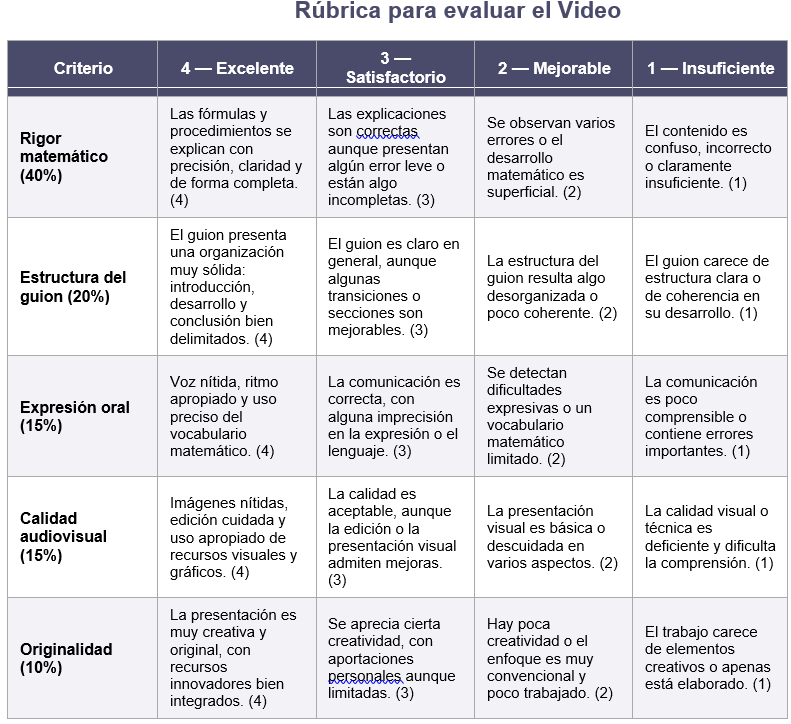

VIDEO TUTORIAL
Objetivo de la actividad: El objetivo de esta tarea es que, trabajando en equipos de 3 a 4 personas, elaboréis y grabéis un vídeo didáctico en el que expliquéis de forma clara y comprensible cómo calcular el área y el volumen de un tronco de pirámide o de un tronco de cono.
A través de este proyecto no solo practicaréis contenidos de geometría, sino que también desarrollaréis otras competencias importantes. En concreto, esta actividad os ayudará a:
Afianzar y comprender mejor los conceptos geométricos relacionados con áreas y volúmenes.
Mejorar vuestra capacidad de comunicación, tanto oral como visual.
Aprender a organizar ideas, elaborar un guion coherente y crear contenido audiovisual de calidad.
Trabajar en equipo, repartiendo tareas y tomando decisiones conjuntas.
Podéis tomar como referencia vídeos educativos de plataformas como YouTube, fijándoos en cómo explican los conceptos, cómo estructuran la información o qué recursos visuales utilizan.
Fases del trabajo: Presentación del tema comenzando el vídeo introduciendo el contenido que vais a explicar, contextualizando la importancia del cálculo de áreas y volúmenes en geometría.
Mostrad ejemplos sencillos de troncos de pirámide o de cono para que el espectador se familiarice con estas figuras.
Planificación y elaboración del guion organizando el trabajo en grupo: decidid quién se encarga de cada parte y en qué orden aparecerán las explicaciones.
Diseñad un guion claro, estructurado y fácil de seguir, procurando que el contenido resulte atractivo y comprensible.
Búsqueda de información y materiales, investigad las fórmulas necesarias, propiedades, esquemas o representaciones gráficas que os ayuden a explicar el procedimiento.
Aseguraos de comprender bien todos los pasos antes de grabar, para evitar errores o dudas durante la explicación.
Grabación del vídeo. Podéis utilizar distintos recursos: pizarra, presentaciones digitales, maquetas, dibujos o incluso ejemplos manipulativos.
Intentad que la explicación sea clara, ordenada y visualmente apoyada.
Edición y revisión final. Revisad el vídeo una vez grabado y realizad las modificaciones necesarias.
Cuidad aspectos como la claridad de la explicación, el sonido, la iluminación y la calidad visual en general.
Comprobad que el resultado final sea comprensible para cualquier compañero.
Indicaciones técnicas:
Duración: entre 5 y 10 minutos.
Formato: vídeo digital (preferiblemente mp4, AVI u otros formatos compatibles).
Entrega: el archivo deberá subirse en la tarea correspondiente de Teams antes del 25 de marzo de 2026.
Se valorará especialmente la claridad de las explicaciones, la organización del contenido, la creatividad y el trabajo en equipo.
Criterios de evaluación:
Rigor matemático (40%) — Precisión, claridad y completitud en la explicación de fórmulas y procedimientos.
Estructura del guion (20%) — Organización del guion con introducción, desarrollo y conclusión bien definidos.
Expresión oral (15%) — Claridad de voz, ritmo y uso correcto del vocabulario matemático.
Calidad audiovisual (15%) — Nitidez de imágenes, edición y uso de recursos visuales y gráficos.
Originalidad (10%) — Creatividad e innovación en la presentación del contenido.
